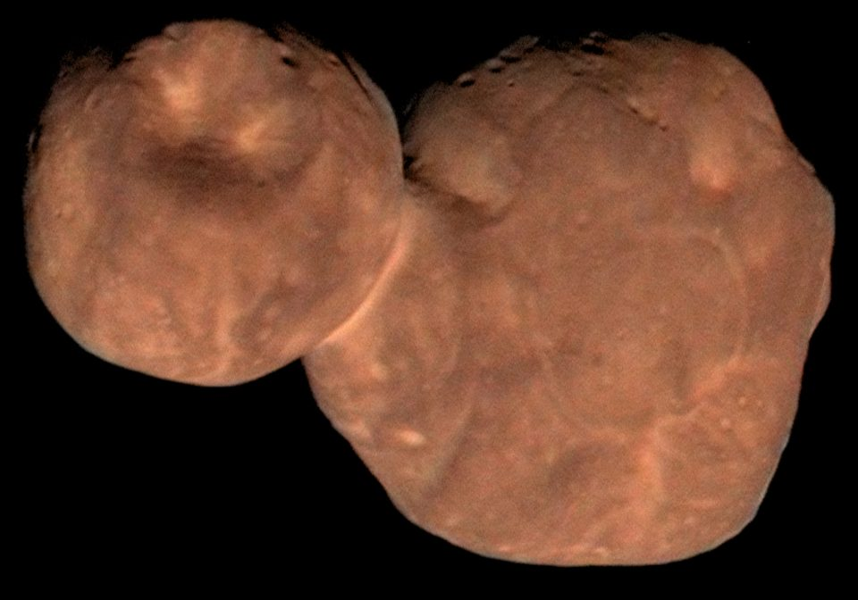

Pluto and the dwarf planets
Pluto, Ceres, Eris, Haumea and Makemake: round worlds that fall short of being planets, and the Kuiper belt where most of them live.


For 76 years Pluto was the ninth planet. In 2006 the International Astronomical Union defined what a planet is for the first time, and Pluto was left out. Since then it has been a dwarf planet, a category it shares with at least four other worlds.
Why is Pluto no longer a planet?
Under the 2006 definition, a planet must meet three conditions:
- Orbit the Sun.
- Have enough mass for its gravity to make it nearly round.
- Have "cleared" its orbit of other objects of similar size.
Pluto meets the first two but not the third: it shares its zone with thousands of bodies in the Kuiper belt. The trigger was the discovery of Eris in 2005, a world of almost identical size. Either a tenth planet was accepted, and probably many more, or a new category was needed.
Pluto up close
When the New Horizons probe flew past Pluto on 14 July 2015, after a nine-year journey, it found a far livelier world than expected. Its most famous feature is a huge white heart, Tombaugh Regio, whose left half is a glacier of frozen nitrogen called Sputnik Planitia. It also has water-ice mountains 3,500 metres high, a thin atmosphere with layers of blue haze and perhaps an ocean beneath its surface.
Its moon Charon is so large, half Pluto's size, that the two orbit a point between them. They always show each other the same face.
The five recognised
| Dwarf planet | Where it is | Diameter | Discovered |
|---|---|---|---|
| Ceres | Asteroid belt | 940 km | 1801 |
| Pluto | Kuiper belt | 2,377 km | 1930 |
| Haumea | Kuiper belt | ≈ 1,600 km (elongated) | 2004 |
| Makemake | Kuiper belt | ≈ 1,430 km | 2005 |
| Eris | Scattered disc | 2,326 km | 2005 |

_(cropped).jpg){kind=link}
Ceres, the closest
Ceres was the first object discovered in the asteroid belt, by the Italian Giuseppe Piazzi on 1 January 1801. For half a century it was considered a planet. The Dawn probe orbited it from 2015 to 2018 and found bright patches of salt in Occator crater, the remains of brine that rose from the interior.
The Kuiper belt
Beyond Neptune, between 30 and 50 times the Earth–Sun distance, lies a ring of icy bodies left over from the formation of the solar system. Besides the dwarf planets, it is home to Arrokoth, the most distant object ever visited by a spacecraft: New Horizons flew past it on 1 January 2019. It looks like a snowman made of two balls that gently stuck together.


Videos to understand it better
- Pluto 101 | National GeographicNational Geographic · 2.4M views
- The Discovery That Demoted PlutoAstrum · 1M views
Videos are from YouTube and belong to their creators. They only load when you click them. See all videos →